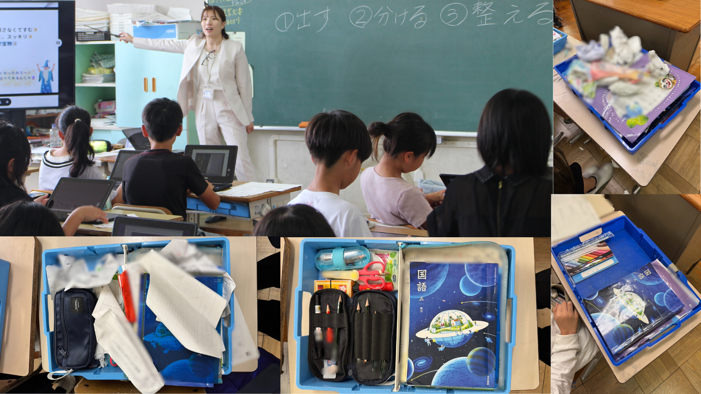
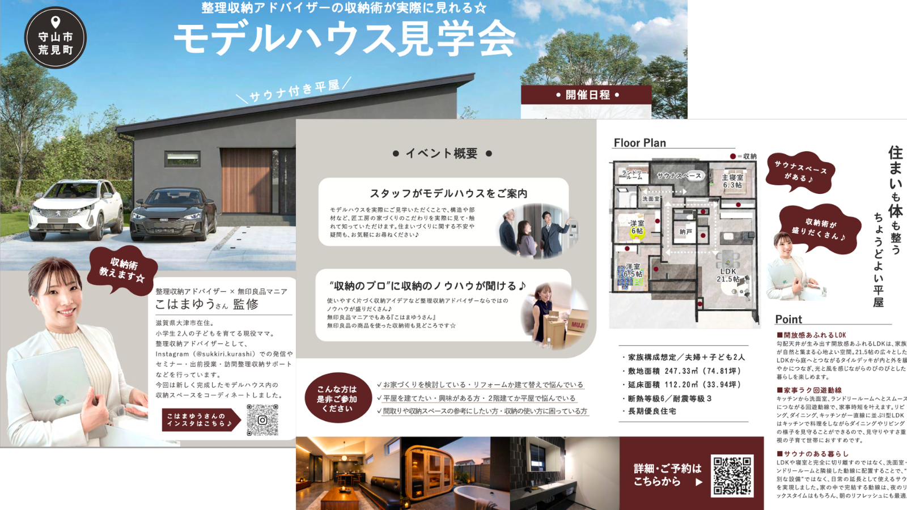
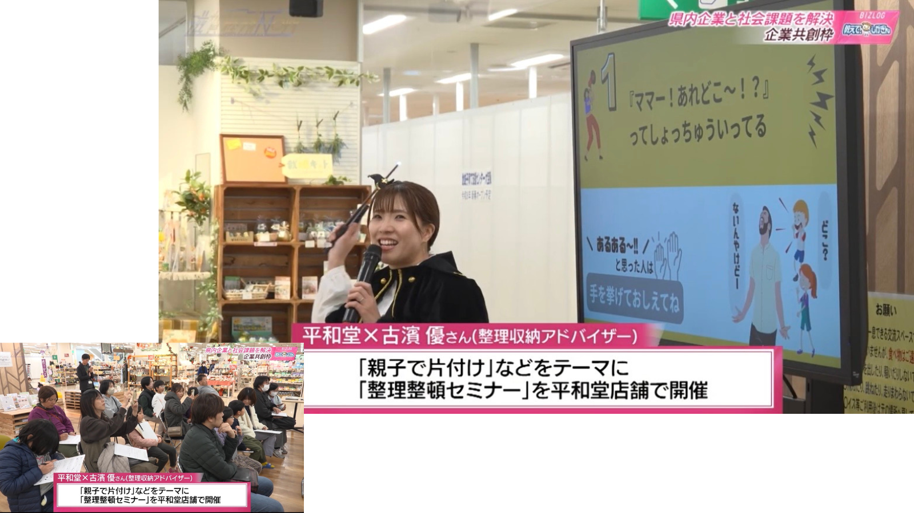
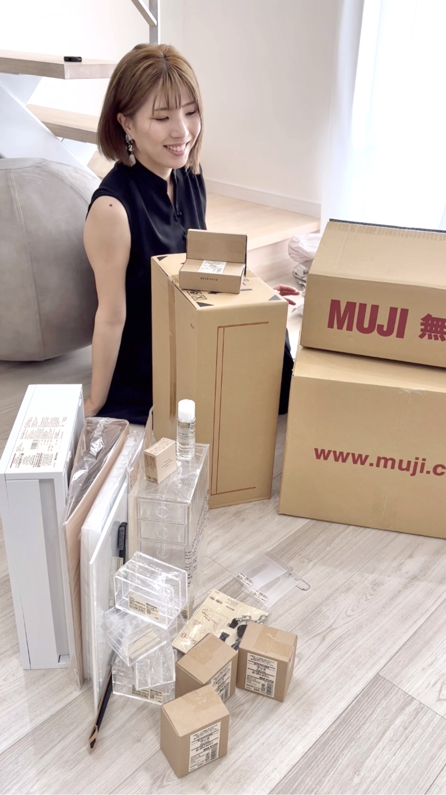
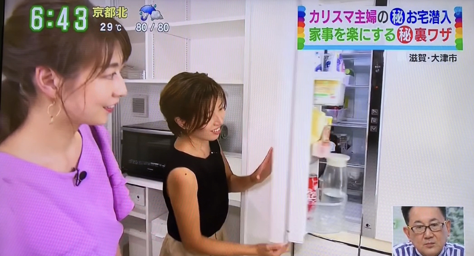
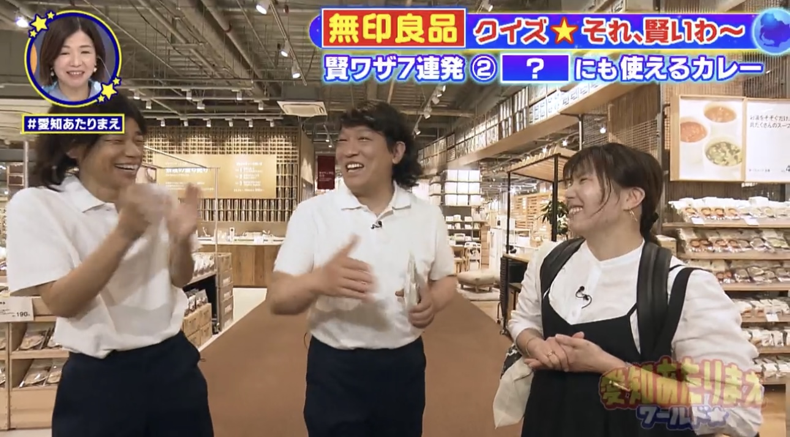
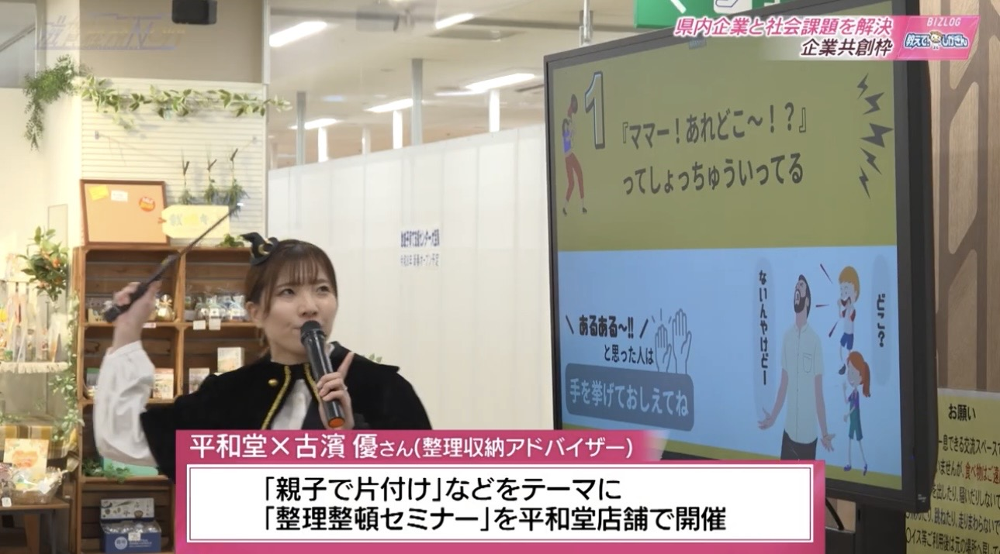

暮らしの専門家として全国で、教育機関・商業施設・住宅会社など
整理収納・暮らしの仕組みづくりの専門家として、講演・メディア出演・セミナー・収納設計監修のご相談を受け付けています。



暮らしを整える「片づけの考え方」を伝える講座
出前授業では、家庭科の「整理・整とん」の考え方をベースに
ワークや実例を交えながら楽しく学べる内容です。
子どもたちに親しみやすく伝えるため
魔法使いの姿の「すっきりせんせい」として登壇し、
引き出し整理ワーク「すっきりタイムチャレンジ」など
体験型プログラムを取り入れています。
また一般向け講演では、オリジナルの「すっきりおうち5Sメソッド」や「すっきり５つのじゅもん」など
整理収納を暮らしに取り入れやすい形でわかりやすく伝えます。
暮らしやすさから逆算した収納設計
住宅会社・モデルハウス・店舗などの収納設計監修・スタイリング監修を行います。
生活動線や使用シーンをもとに、
暮らしに合わせた収納計画を設計。
間取りや収納スペースを読み取りながら、
手描きの収納設計図を作成し、
収納構成・収納用品選定までトータルで提案します。
実際の暮らしを想定した「使いやすい収納」を設計し、モデルハウスの見せ方や暮らしのイメージづくりまでサポートします。
暮らしの専門家 すっきり収納クリエイターとして発信
テレビや雑誌などのメディアで、収納アイデアや暮らしを整える工夫を紹介しています。
無印良品をはじめとした収納グッズの活用法や、実用的な収納アイデアを発信。
商品紹介・企画監修・収納スタイリングなどのご相談にも対応しています。

滋賀県在住。小6息子と小3娘、夫との4人暮らし。
収納グッズを見るのが好きで、気になるものはついチェック。
なかでも無印良品は26年以上愛用、厳選700超のMUJIと暮らしています。
もともと家事や片づけが得意なタイプではありませんでしたが
整理収納と出会い、暮らしが少しずつ整っていく面白さを実感しました。
暮らしを、変える。
整理収納には、毎日の暮らしや人生の流れをすっきり動かす力があります。
暮らしの専門家 すっきり収納クリエイター として
暮らしをすっきり整える仕組みづくりとその楽しさを社会に広げたい。
そんな想いで整理収納の魅力を、子どもたちから大人まで
幅広く届ける活動を行っています。
資格
整理収納・暮らしの仕組みづくりなど、暮らしの専門家として、 テレビ・雑誌・Webメディアの取材、出演、監修に対応しています。



講演・セミナー、収納設計監修、メディア出演などのご依頼を承っています。
教育機関・企業・住宅会社・メディアなど、さまざまな場面でご相談いただけます。
内容・規模・事前準備の有無によりお見積りいたします。
ご予算や目的に応じて柔軟に対応しておりますので、まずはご相談ください。
※交通費別途（滋賀県大津市発） ※遠方出張・宿泊が必要な場合は別途ご相談 ※内容や規模によりお見積りいたします。
講演・セミナー、収納設計監修、メディア出演・掲載などのご相談を承っております。
企画段階のご相談や日程の確認だけでもお気軽にお問い合わせください。
通常24時間以内に返信いたします。